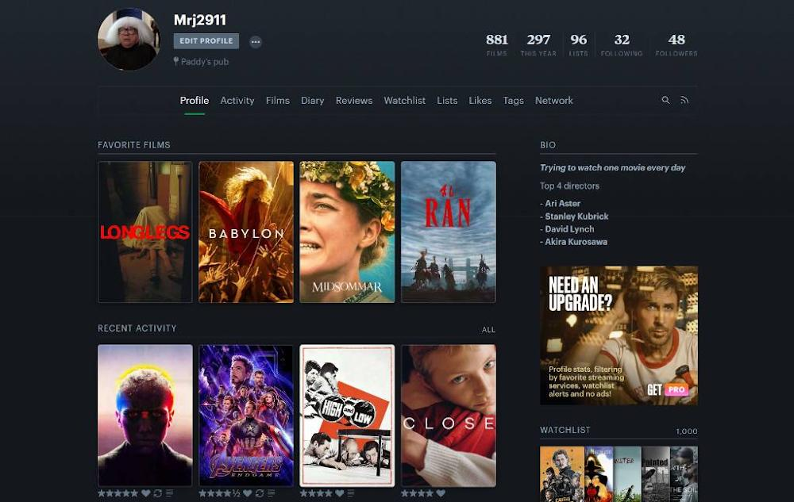

<!DOCTYPE html>
<html lang="no">
<head>
    <meta charset="UTF-8">
    <meta name="viewport" content="width=device-width, initial-scale=1.0">
    <title>min hobby</title>
    <link rel="stylesheet" href="style.css"
</head>
<body>
    
</body>
</html>
<header>
<h1>film</h1>
<p>filmer er lange videor som følger samme karakterer rundt hele filmen som forteller en historie. det finnes mange mange sjangre med film. eksempler på disse sjangrene er skrekk, komedie, action, drama osv...
    <p>jeg ser på filmer fordi det er noe jeg er virkelig interessert i og det er det jeg har lyst jobbe med i framtiden og det er også derfor jeg ser på film. det er egentlig ikke noe som er spesielt vanskelig med det siden man bare sitter stille å ser på en skjerm, men det å bestemme seg for hva man skal se er jo litt irriterende noen ganger. det er 100 filmer jeg har veldig lyst til å se, men det er jo ikke akuratt mulig å se alle de samtidig.</p>

</header>
<main>
<h2>slik kommer du i gang</h2>
<li> jeg ville anbefalt å starte med å finne ut hvilken sjanger du er mest glad i. etter det hadde jeg anbefalt å se de mest klassiske og kjente filmene innen for denne sjangeren, for eksempel for drama hadde jeg nok startet med good will hunting og gudfaren. en annen bra måte å starte er å se de høyeste rankerte filmene på <a href="https://www.imdb.com/chart/top/" target="_blank"> IMBD sin top 250 filmer</a> og velge ut de man syntes virker interessante.</li>
<li> et annet alternativ som jeg ville anbefalt etter det er finne en regissør du liker spesielt godt, se mange/alle av filmene dems, og så finne regissører som lager like type filmer og se dem.</li>
<li></li>
<li> dette er faktisk hvordan jeg starta også, jeg starta med å se mest populære skrekk filmene som the shining og midsommar, så så jeg meste parten av de høyeste rankerte filmene på <a href="https://www.imdb.com/chart/top/" target="_blank"> IMBD top 250 filmer</a>, og til slutt så begynte jeg med "deepdives" på forskjellige regissører som for eksempel stanley kubrick, david lynch og akira kurosawa.</li>
<li> det siste og kanskje mest viktigste tipset mitt er ikke bare se en type film, hvis du for eksempel vil jobbe med film som meg, så er det viktig at du ikke bare ser action fylte filmer med slossing vært 2 minutt, se filmer fra en annen sjanger, og ikke dropp filmer fordi de er i svart-hvit eller fordi de kommer fra et annet land</li>
<li></li>
<li> en annen måte å finne mange kule ting på og se hva andre folk tenker om forskjellige filmer er nettsiden <a href="https://letterboxd.com/" target="_blank">letterboxd</a> som er en nettside hvor man kan ranke filmer og logge når man har sett dem så man for en slags dagbok med alle filmene du har sett. bilde under er brukeren min på letterboxd hvor du kan se mine 4 favoritt filmer, de 4 siste filmene jeg så osv.</li> 
</li>

<h2>hva trenger du for å begynne?</h2>
<li> 1. noe å se filmer på som f.eks tv, telefon, ipad, pc</li>
<li> 2. et sted å se filmene på som netflix, hbo, eller andre kanskje bittelitt mindre komplett lovlige nettsider hvor man kan finne ting man ikke kan finne så lett på vanlige strømme tjenester</li>
<li> 3. eventuelt dvd-er eller blu-ray hvor man også vil trenge en dvd spiller eller playstation som kan ta disker</li>

<li></li>

<p class="viktig-setning"><em>"ikke lik filmer fordi folk sier de er bra, lag din egen mening om film og ikke bare følg etter mengden" - Magnus Roos Jakobsen</em></p>
</main>

<footer>
 <p id="copyright">laget av magnus roos 2026</p>
</footer>